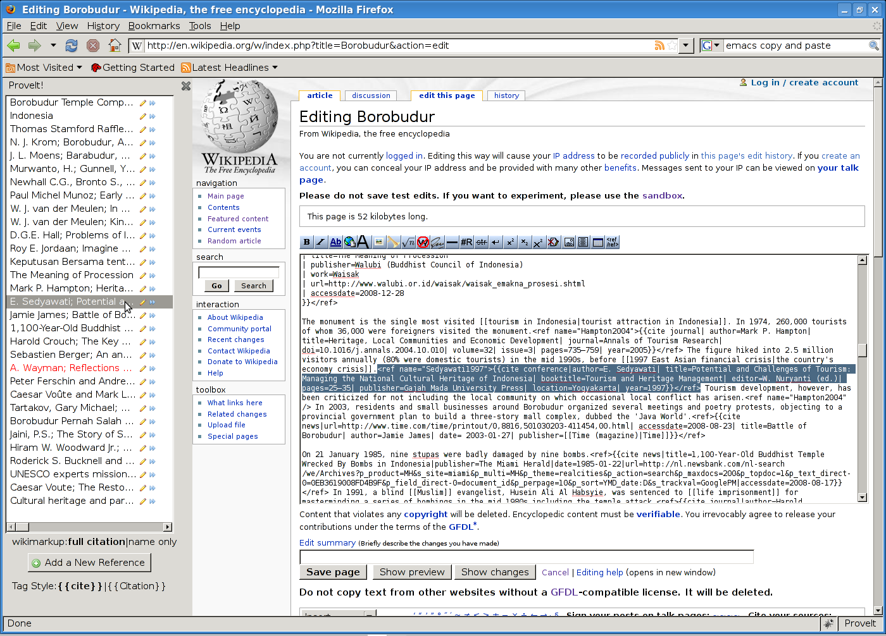

Go to the page you wish to edit, and click the edit tab up top.
{kind=link}
The regular MediaWiki edit page will appear, along with the ProveIt sidebar at left.

Find the reference you wish to insert in the sidebar list. In this case, we will choose the conference paper by "E. Sedyawati". Click on this reference to select it. The first time you click, the sidebar may reload. Ignore this and click again.
The reference will now be highlighted in the sidebar, and the reference text will be highlighted in the MediaWiki edit box. 
{kind=link}
Now, choose the place in the edit box that you want to insert another instance of the reference. Place the caret (text cursor) there; this will result in the text of the reference no longer being highlighted.
Then, click name only at the bottom of the sidebar. This tells ProveIt we will be inserting only a <ref> name, not the entire reference. If there was no <ref> name, we would have to insert the full version (labelled as full citation) or add a name.
{kind=link}
Finally, click the blue arrows next to the reference in the sidebar. This causes the reference's <ref> name to be inserted at the caret and highlighted. In this case, that text is <ref name="Sedyawati1997" />, because the <ref> name is Sedyawati1997.
{kind=link}